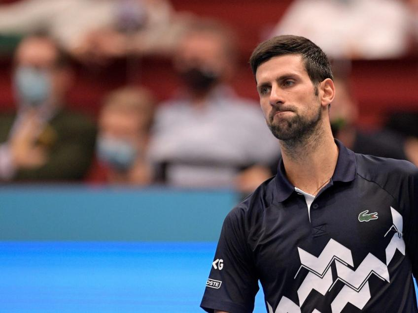

More Facts About Djokovic
- He speaks fluent Serbian, Italian, German and English
- In 2015, he wrote a book titled "Serve to Win" about his eccentric world
- He began playing tennis at the age of four
- He is gluten intolerant
- He is known for his humorous off-court impersonations of fellow players and friends
